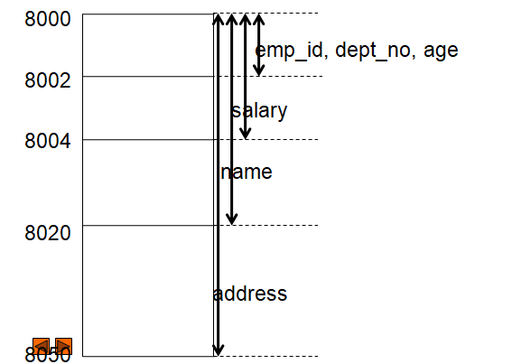

1.4 Unions in C
- A union is a user defined data type like structure.
- The union groups logically related variables into a single unit.
- The union data type allocate the space equal to space need to hold the largest data member of union.
- The union allows different types of variable to share same space in memory.
- There is no other difference between structure and union than internal difference.
- The method to declare, use and access the union is same as structure except the keyword union.
1.4.1 Example of Union
- The union of Employee is declared as
union employee
{
int emp_id;
char name[20];
float salary;
char address[50];
int dept_no;
int age;
}e;
1.4.2 Memory Space Allocation
